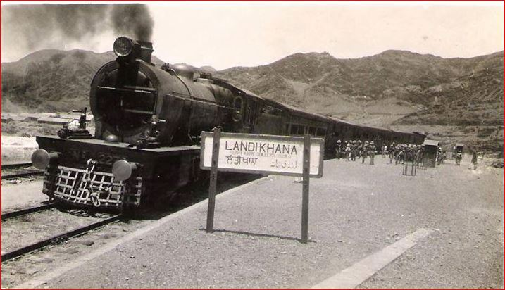

Provincial Assembly Holds Emergency Session
By Staff Reporter, Lahore

The Punjab Provincial Assembly convened an emergency session yesterday to address pressing administrative matters affecting the region. Members from various political parties gathered to discuss critical issues including budget allocations and infrastructure development projects across the province.
The session witnessed heated debates between treasury and opposition benches regarding the allocation of funds for rural development. Several representatives emphasized the urgent need for improved irrigation systems in agricultural districts.
Assembly Speaker announced that further deliberations would continue in the next session scheduled for later this month. Key decisions regarding public welfare schemes are expected to be finalized soon.
Cotton Harvest Shows Promising Yield
Agricultural experts report exceptional cotton production this season across Punjab's farming regions. The favorable weather conditions combined with improved farming techniques have resulted in higher yields than previous years.
Local farmers express optimism about market prices as demand from textile mills continues to grow steadily. Government agricultural department officials have praised farmers for adopting modern cultivation methods.
|
Railway Expansion Project Announced for Northern Region
Special Correspondent

British Indian Railways announced ambitious plans to expand rail connectivity to remote northern districts. The comprehensive infrastructure project aims to connect previously isolated mountain communities with major urban centers, facilitating trade and passenger movement.
Engineering teams have already begun preliminary surveys for the challenging terrain. Officials estimate the project will require three years for completion and will create thousands of employment opportunities for local workers.
Railway authorities emphasized that the new lines will significantly reduce travel time between provincial capitals and border regions. This development is expected to boost economic activities and improve access to essential services.
Local community leaders welcomed the announcement, describing it as a transformative initiative for regional development. Construction work is scheduled to commence in early spring next year.
Educational Institutions Report Increased Enrollment
Schools and colleges across the province report remarkable growth in student admissions this academic year. Education department officials attribute this positive trend to government initiatives promoting literacy and awareness campaigns in rural areas.
Several new educational facilities are being established to accommodate rising demand. Administrators emphasize the need for additional qualified teachers and improved infrastructure to maintain quality education standards.
|
Cultural Festival Celebrates Traditional Arts
Arts & Culture Desk

A grand cultural festival showcasing traditional music, dance, and handicrafts commenced in the city yesterday. The three-day celebration attracts artists and performers from various regions, offering citizens an opportunity to experience diverse cultural heritage.
Event organizers arranged multiple performance stages featuring classical musicians and folk dancers. Craftsmen displayed exquisite handmade products including pottery, textiles, and traditional jewelry, drawing considerable public interest.
Municipal authorities expect thousands of visitors throughout the festival duration. The event concludes this weekend with special evening programs highlighting regional artistic traditions.
Weather Report
Lahore: Clear skies, mild temperatures expected throughout the day. Maximum 22°C, Minimum 12°C.
Karachi: Partly cloudy with coastal breeze. Maximum 26°C, Minimum 18°C.
Rawalpindi: Cool morning, pleasant afternoon. Maximum 20°C, Minimum 10°C.
Advertisement
QUALITY FABRICS
Premium cotton and silk materials now available at wholesale prices. Visit our showroom near Anarkali Bazaar.
For inquiries: Khan Textile House, Main Market
|